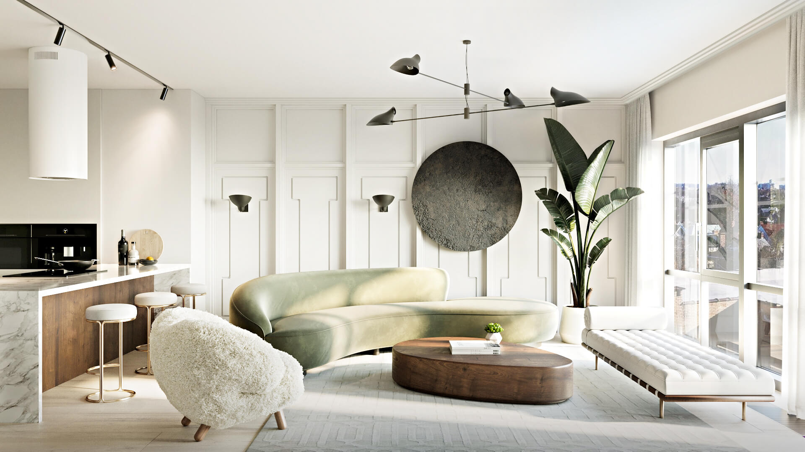
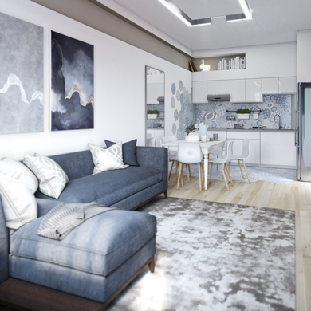

Ви зможете побачити, як буде виглядати Ваша квартира, або будинок, або кафе, або салон краси або магазин, після закінчення ремонту.
Є можливість внести зміни в проект на початковій стадії, в процесі обговорення.
Якщо Замовник не може визначиться яку колірну гамму застосувати на об'єкті, дизайнер пропонує кілька варіантів.
Є сумніви з приводу обраного стилю? - теж на допомогу приходить візуалізація. Також 3D візуалізація допоможе при виборі оздоблювальних матеріалів, меблів та освітлення. Візуалізація дає правильний напрямок, а наше завдання - дотримуватися обраного курсу.
Як проходить робота над проектом з візуалізацією на замовлення: в першу чергу нам необхідно визначиться з розстановкою меблів і устаткування, підготувати креслення по планувального вирішення. Це є основою нашої 3D візуалізації, так як виконується для кожного об'єкта індивідуально із чіткими розмірними прив'язками. А далі починається робота дизайнера. Дизайнер, спираючись на свій досвід, на технічне завдання, яке отримав в процесі обговорення інтер'єру створює зображення кожного приміщення. Завдяки 3D візуалізації у нас є можливість побачити інтер'єр до найдрібніших деталей, зрозуміти загальну ідею і отримати максимально наближене зображення до реальності.

| Площа приміщення | Термін виконання | Ціна |
|---|---|---|
| < 15м 2 | 1 доба | 500 грн |
| 15м2 - 25м 2 | 1 доба | 700 грн |
| 25м2 - 50м 2 | 2 доба | 1000 грн |
| > 50м 2 | 3 доба | за домовленістю |
Вартість візуалізації включає:
|
| Завдяки 3d візуалізації у нас є можливість побачити інтер'єр до найдрібніших деталей, зрозуміти загальну ідею і отримати максимально наближене зображення до реальності. |
|---|
Опис предметної галузі |